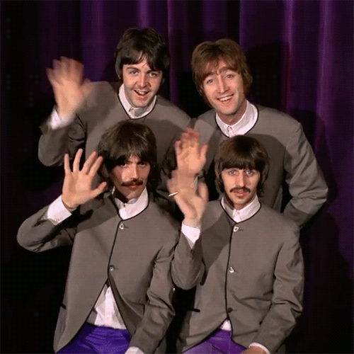
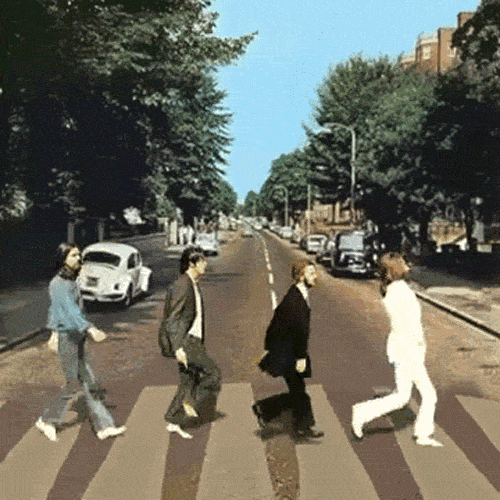
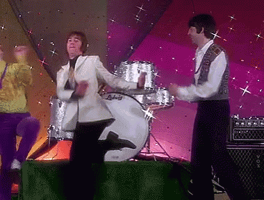
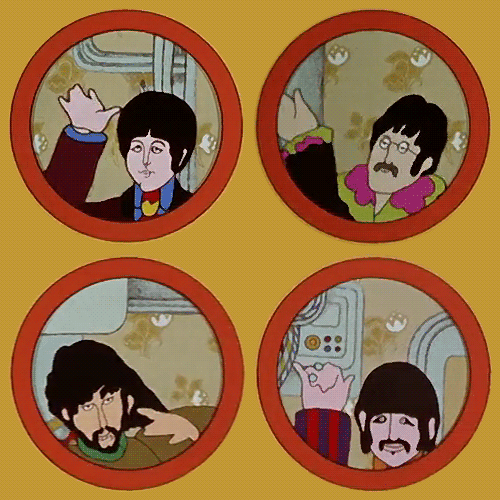

The beatles
Inicio
(current)
Discografia
Registro
El jardin del Pulpo
The little hideaway beneath the waves
Aqui encontraras:
Imagenes exclusivas
Datos Curiosos
Una bonita pagina dedicada a los beatles
Al ser miembro podras:
Guardar tu lista de canciones favoritas
Contrubir con la Wiki
Unirte al chat de la comunidad



